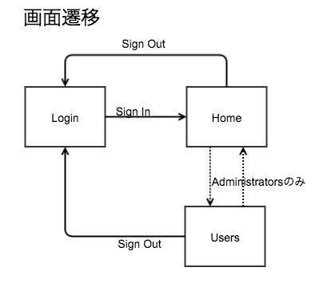

3. ASP.NET MVCによるWebアプリケーション開発 - 応用編
ASP.NETの認証機能について
メンバーシップ フレームワーク
ASP.NET 2.0 以降から採用された認証ライブラリです。比較的シンプルに実装できるため、広く利用されています。
今回はメンバーシップフレームワークによる認証・認可機能の実装方法を解説します。
【用語解説】ASP.NET Identity
ASP.NET Identity は Visual Studio 2013 から新たに搭載された認証ライブラリです。
以下の様な特徴があります。
- Entity Framework を基板としているため、アカウント情報の管理に関する実装が容易である
- ActiveDirectoryによる認証に対応
- Twitter, Facebook, Googleなどのソーシャルアカウントによる認証に対応
Visual Studio 2013 で ASP.NETプロジェクトを作成するときに生成されるソースコードには、ASP.NET Identityによる認証機能が予め実装されています。
基本的なフォーム認証の実装
簡単なWebアプリケーションの作成を題材に、フォーム認証の実装方法について解説します。
実際のソースコードは こちら で確認できます。
概要
- 画面構成
- ログイン画面
- ホーム画面 (全ユーザー共通の画面)
- 管理画面 (管理者アカウントのみ表示可能)
画面遷移
ログイン画面 -(ログイン成功)-> ホーム画面 -(管理者のみ)-> 管理画面
1. Providerクラスの実装
さっそく、認証機能を司る Provider クラスを作成していきます。
(1) MembershipProviderの実装
MembershipProvider クラスを継承したクラスを実装します。
幾つか override しないといけないメソッドがありますが、
今回使用するのは ValidateUser メソッドだけなので、このメソッドのみ実装します。
ValidateUserはusernameとpasswordを受け取って認証の成否を返します。
認証の動作を確認するため、ひとまず username 、 password は固定としています。
CustomMembershipProvider.cs
namespace AuthTest.Models
{
public class CustomMembershipProvider : MembershipProvider
{
public override bool ValidateUser(string username, string password)
{
// とりあえず固定で認証
if ("administrator".Equals(username) && "password".Equals(password))
{
return true;
}
if ("user".Equals(username) && "password".Equals(password))
{
return true;
}
return false;
}
// 〜〜略〜〜
(2) RoleProviderの実装
つづいて、 RoleProvider クラスを継承したクラスを実装します。
MembershipProvider と同様、今回使用するメソッドのみ中身を実装します。
IsUserInRoleメソッドは 指定されたユーザーが、該当するロールに所属しているかどうかを返します。GetRolesForUserメソッドは 指定されたユーザーが所属するロールの配列を返します。
- CustomRoleProvider.cs
namespace AuthTest.Models
{
public class CustomRoleProvider : RoleProvider
{
public override bool IsUserInRole(string username, string roleName)
{
if ("administrator".Equals(username) && "Administrators".Equals(roleName))
{
return true;
}
if ("user".Equals(username) && "Users".Equals(roleName))
{
return true;
}
return false;
}
public override string[] GetRolesForUser(string username)
{
if ("administrator".Equals(username))
{
return new string[] { "Administrators" };
}
return new string[] { "Users" };
}
// 〜〜略〜〜
2. ViewModelの実装
ViewModel は実際のModel (テーブルの形) と画面に表示する項目との違いを吸収するために使用するテクニックです。
画面とコントローラとのやりとりは ViewModel を介して行います。
画面からの入力内容をデータベースに反映する場合に コントローラにて ViewModel からデータを取得し、
Model にデータを格納して、データベースに保存します。
今回はログイン画面の入力項目を LoginViewModel として定義します。
- LoginViewModel.cs
namespace AuthTest.Models
{
public class LoginViewModel
{
[Required]
[DisplayName("ユーザー名")]
public string UserName { get; set; }
[Required]
[DisplayName("パスワード")]
public string Password { get; set; }
}
}
3. Controllerの実装
(1) LoginControllerの実装
namespace AuthTest.Controllers
{
[AllowAnonymous]
public class LoginController : Controller
{
readonly CustomMembershipProvider membershipProvider = new CustomMembershipProvider();
// GET: Login
public ActionResult Index()
{
FormsAuthentication.SignOut();
return View();
}
[HttpPost]
[ValidateAntiForgeryToken]
public ActionResult Index([Bind(Include="UserName,Password")] LoginViewModel model)
{
if (this.membershipProvider.ValidateUser(model.UserName, model.Password))
{
FormsAuthentication.SetAuthCookie(model.UserName, false);
return RedirectToAction("Index", "Home");
}
ViewBag.Message = "ログインに失敗しました。";
return View(model);
}
public ActionResult SignOut()
{
FormsAuthentication.SignOut();
return RedirectToAction("Index");
}
}
}
[AllowAnonymous]はLoginController全体へのアクセスで、認証を不要とします。[HttpPost] Indexで認証処理を行います。
ログイン画面で入力された内容は LoginViewModel に格納されます。
送られてきたユーザー名、パスワードを MembershipProvider でチェックし、認証OKであれば
FormsAuthentication.SetAuthCookie メソッドを実行します。
第2引数の boolean は、認証クッキーを残すかどうかのフラグです。 ログイン画面によくある、「次回から自動的にログイン」とか「ログインしたままにする」といったチェックボックスの機能です。
認証後、Home画面にリダイレクトしています。
SignOutメソッドで認証クッキーが削除され、ログアウトした状態となります。
(2) HomeControllerの実装
- HomeController.cs
namespace AuthTest.Controllers
{
[Authorize]
public class HomeController : Controller
{
// GET: Home
public ActionResult Index()
{
return View();
}
}
}
[Authorize] は HomeController にアクセスするために認証が必要であることを示します。
認証されていない状態でアクセスすると、ログイン画面にリダイレクトされます。
(3) AdminControllerの実装
namespace AuthTest.Controllers
{
[Authorize(Roles="Administrators")]
public class AdminController : Controller
{
// GET: Admin
public ActionResult Index()
{
return View();
}
}
}
[Authorize(Roles="Administrators")] は AdminController に Administrators ロールに属するユーザーのみアクセス可能であることを示します。
それ以外のユーザーが該当画面にアクセスした場合、ログイン画面にリダイレクトされます。
3. Viewの作成
(1) /Views/Shared/_LayoutPage1.cshtml の作成
Sharedフォルダの作成- レイアウトページの作成
後半のパートで使用しますので、共通レイアウトを定義しておきます。
(2) /Views/Login/Index.cshtml の作成
LoginControllerを右クリック ->Add Viewを選択LoginViewModelのCreateとしてIndex.cshtmlを作成- 不要な項目の削除、ボタンのラベルを
SignInに変更
@model AuthTest.Models.LoginViewModel
@{
ViewBag.Title = "Index";
Layout = "~/Views/Shared/_LayoutPage1.cshtml";
}
<h2>SignIn</h2>
@using (Html.BeginForm())
{
@Html.AntiForgeryToken()
<div class="form-horizontal">
@Html.ValidationSummary(true, "", new { @class = "text-danger" })
<div class="form-group">
@Html.LabelFor(model => model.UserName, htmlAttributes: new { @class = "control-label col-md-2" })
<div class="col-md-10">
@Html.EditorFor(model => model.UserName, new { htmlAttributes = new { @class = "form-control" } })
@Html.ValidationMessageFor(model => model.UserName, "", new { @class = "text-danger" })
</div>
</div>
<div class="form-group">
@Html.LabelFor(model => model.Password, htmlAttributes: new { @class = "control-label col-md-2" })
<div class="col-md-10">
@Html.EditorFor(model => model.Password, new { htmlAttributes = new { @class = "form-control" } })
@Html.ValidationMessageFor(model => model.Password, "", new { @class = "text-danger" })
</div>
</div>
<div class="form-group">
<div class="col-md-offset-2 col-md-10">
<input type="submit" value="SignIn" class="btn btn-default" />
</div>
</div>
</div>
}
<script src="~/Scripts/jquery-1.10.2.min.js"></script>
<script src="~/Scripts/jquery.validate.min.js"></script>
<script src="~/Scripts/jquery.validate.unobtrusive.min.js"></script>
(3) HomeViewの作成
(4) AdminViewの作成
TitleにHome,Adminと表記 (どちらの画面を表示しているかわかりやすいように)HomeとAdminを相互に遷移できるようにリンクを追加
4. web.configの設定
最後に、フォーム認証を行うように web.config に設定を追加します。
<system.web>
<compilation debug="true" targetFramework="4.5.1"/>
<httpRuntime targetFramework="4.5.1"/>
<authentication mode="Forms">
<forms loginUrl="~/Login/Index"></forms>
</authentication>
<membership defaultProvider="CustomMembershipProvider">
<providers>
<clear/>
<add name="CustpmMembershipProvider" type="AuthTest.Models.CustomMembershipProvider"/>
</providers>
</membership>
<roleManager enabled="true" defaultProvider="CustomRoleProvider">
<providers>
<clear/>
<add name="CustomRoleProvider" type="AuthTest.Models.CustomRoleProvider"/>
</providers>
</roleManager>
</system.web>
authenticationタグの追加mode="Forms"でフォーム認証を行うことを指定formsタグでログイン画面を指定
membershipタグの追加CustomMembershipProviderクラスを指定
roleManagerタグの追加CustomRoleProviderクラスを指定
5. デバッグ実行して動作確認
- ログイン画面が表示されることを確認
- user / password でログインし ホーム画面に遷移することを確認
- Adminリンクをクリックするとログイン画面に戻されることを確認
- URLを指定して ~/Home/Index を指定してもログイン画面に戻されることを確認
- URLを指定して ~/Admin/Index を指定してもログイン画面に戻されることを確認
- administrator / password でログインし ホーム画面に遷移することを確認
- Adminリンクをクリックして管理画面に遷移することを確認
- SignOutリンクをクリックしてログイン画面に遷移することを確認
- URLを指定して ~/Home/Index を指定してもログイン画面に戻されることを確認
- URLを指定して ~/Admin/Index を指定してもログイン画面に戻されることを確認
ASP.NET MVCでのフォーム認証の基本的な実装について解説しました。
(まともな) Todo管理アプリケーションの作成
つづいて、ユーザー管理機能のついた Todo管理アプリケーションを作成します。
- ユーザー毎に個別のTodoを管理
- 管理者のみユーザーアカウントの管理画面を表示
先ほど作成した認証機能だけのWebアプリケーションに必要な機能を肉付けしていきます。
実際のソースコードは こちら で確認できます。
システム仕様
- 画面遷移

- モデル関連

1. Modelの実装
- Models/User.cs
public class User
{
public int Id { get; set; }
[DisplayName("名前")]
[Required]
public string UserName { get; set; }
[DisplayName("パスワード")]
[Required]
public string Password { get; set; }
[DisplayName("役割")]
public virtual ICollection<Role> Roles { get; set; }
[DisplayName("Todo")]
public virtual ICollection<Todo> Todoes { get; set; }
}
ユーザー名とパスワードに加えて、
ユーザーが所属する Role のリスト (将来の拡張を見越して、1ユーザーは複数ロールに所属可能とする) と
そのユーザーが持つ Todo のリストをプロパティとして定義します。
- Models/Role.cs
public class Role
{
public int Id { get; set; }
public string RoleName { get; set; }
public virtual ICollection<User> Users { get; set; }
}
ロール名に加えて、そのロールに所属するユーザーのリストをプロパティとして定義します。
- Models/Todo.cs
public class Todo
{
public int Id { get; set; }
[DisplayName("タイトル")]
[Required]
public string Title { get; set; }
[DisplayName("内容")]
public string Detail { get; set; }
[DisplayName("完了")]
public bool Done { get; set; }
[DisplayName("担当者")]
public virtual User User { get; set; }
}
そのTodoを担当するユーザーをプロパティとして定義します。 ユーザーとTodoは 1:n とします。
- AppContext
public class AppContext : DbContext
{
public DbSet<User> Users { get; set; }
public DbSet<Role> Roles { get; set; }
public DbSet<Todo> Todoes { get; set; }
}
DbContext クラスです。 データベースと紐付ける Modelクラス の DbSet を定義します。
- LoginViewModel
元から変更ありません。
public class LoginViewModel
{
[Required]
[DisplayName("ユーザー名")]
public string UserName { get; set; }
[Required]
[DisplayName("パスワード")]
public string Password { get; set; }
}
【用語解説】ナビゲーションプロパティ
User モデルの public virtual ICollection<Role> Roles や
Todo モデルの public virtual User User は ナビゲーションプロパティ と呼ばれ、
モデル間の関連を表します。
User と Todo のような 1:n の関係の場合、 ナビゲーションプロパティ によって
Todoes テーブルに User_Id という外部キーが作成されます。
User と Role のような m:n の関係の場合、 ナビゲーションプロパティ によって
UserRoles テーブルが生成されます。
2. Providerの実装
固定文字列で認証等の判定を行っていたところを EntityFrameworkを通してデータベースに問い合わせた結果と入力内容を比較するように修正します。
- CustomMembershipProvider
public override bool ValidateUser(string username, string password)
{
using (var db = new AppContext())
{
var user = db.Users
.Where(u => u.UserName == username && u.Password == password)
.FirstOrDefault();
if (user != null)
{
// 認証OK
HttpContext.Current.Session["AuthUserId"] = user.Id;
return true;
}
}
return false;
}
username, passwordを元にユーザーを取得し、ユーザーが取得できた場合は 認証OKとして Session にユーザーのId を格納しています。
FirstOrDefault メソッドは Where でヒットした要素のうちの先頭のモノを返します。
0件の場合は null を返します。
First メソッドを使用すると、0件だった際に例外が発生します。
どちらを使用するかは好みの問題だと思いますが、私はむやみに例外を発生させるのは好きではないので このような処理にしています。
- CustomRoleProvider
public override bool IsUserInRole(string UserId, string roleName)
{
using (var db = new AppContext())
{
var user = db.Users
.Where(u => u.Id == int.Parse(UserId))
.FirstOrDefault();
string[] roles = user.Roles.Select(r => r.RoleName).ToArray();
if (roles.Contains(roleName))
{
return true;
}
}
return false;
}
public override string[] GetRolesForUser(string UserId)
{
using (var db = new AppContext())
{
int id = int.Parse(UserId);
var user = db.Users
.Where(u => u.Id == id)
.FirstOrDefault();
string[] roles = user.Roles.Select(r => r.RoleName).ToArray();
return roles;
}
}
【用語解説】LINQ to Entities
Language INtegrated Query (統合言語クエリー)
オブジェクトやデータベース、データセット、エンティティ、XMLなどアプリケーションで扱う 様々なデータソースに対して、統一的な手段でアクセスする仕組みです。
LINQによる問い合わせはクエリー式構文とメソッド構文の2通りの書き方ができます。
- クエリ構文
var users = from u in db.Users
where u.UserName == model.UserName && u.Password == model.Password
select u;
- メソッド構文
var users = db.Users
.Where(u => u.UserName == model.UserName && u.Password == model.Password)
.Select();
クエリ構文だけでは表現できない機能 (FirstOrDefaultメソッドなど) もあります。 個人的にメソッド構文の方が分かりやすいので、この勉強会ではメソッド構文を使用していきます。
3. 初期データの登録
(1) マイグレーションの有効化
マイグレーション とは、モデルの内容に合わせてデータベースを作成・変更するための仕組みです。
EntityFrameworkのマイグレーション機能により、モデルの変更を自動的に検知し、テーブルレイアウトを変更してくれます。
- TOOLS -> NuGet Package Manager -> Package Manager Console を選択します。
Package Manager Console が表示されるので、以下のコマンド (1行目) を入力します。
PM> Enable-Migrations -ContextTypeName AuthTest.Models.AppContext
Checking if the context targets an existing database...
Code First Migrations enabled for project AuthTest.
Migrations/Configuration.cs というファイルが生成されます。
(2) イニシャライザーの登録
実行時に Configuration.cs の Seed メソッドが実行されるように
Global.asax.cs に追記します。
protected void Application_Start()
{
AreaRegistration.RegisterAllAreas();
RouteConfig.RegisterRoutes(RouteTable.Routes);
Database.SetInitializer(new MigrateDatabaseToLatestVersion<AppContext, Configuration>());
}
(3) 自動マイグレーションの有効化
Migrations/Configuration.cs の Configuration メソッドにて
自動マイグレーションを有効にします。
public Configuration()
{
AutomaticMigrationsEnabled = true;
AutomaticMigrationDataLossAllowed = true;
}
AutomaticMigrationDataLossAllowed はデータが失われるような変更 (列が削除されるなど) の自動マイグレーションを許可するかどうかのオプションです。
【解説】手動マイグレーションの方法について
自動マイグレーションを無効化した状態でモデルに変更を加えると、 次のデバッグ実行時に「Code First Migrations を使用したデータベースの更新を検討してください」といったエラーメッセージが表示されます。
以下のコマンドで手動マイグレーションファイルを作成します。
Add-Migration AddPropertiesToModel
AddPropertiesToModel は任意の文字列で構いませんが
後から、モデルにどのような変更を行った時のマイグレーションファイルなのか分かるように名前を付けます。
コマンドを実行すると、 Migrations/XXXXXXXXXX_AddPropertiesToModel.cs というファイルが生成されます。
XXXXXXXXXXはコマンド実行時のタイムスタンプです。
マイグレーションファイルは、前回のマイグレーション以降にモデルに対して加えられた変更を自動的に認識しコードを生成します。
自動生成されたファイルはそのまま使用しても構いませんし、初期値を設定するなどの修正を加えても構いません。
マイグレーションファイルの準備ができたら、以下のコマンドを実行します。
Update-Database -Verbose
-Verbose はマイグレーション実行時の詳細なログを表示するためのオプションなので、必要なければ外して構いません。
以上で、手動でのマイグレーションは完了です。 正常にデバッグ実行できることを確認します。
(4) 初期データの登録
アプリ実行後、管理者アカウントの登録およびRoleの定義を行うように Seed メソッドに処理を書いていきます。
protected override void Seed(AuthTest.Models.AppContext context)
{
User user1 = new User()
{
Id = 1,
UserName = "kimura",
Password = "password",
Roles = new List<Role>(),
Todoes = new List<Todo>()
};
Role role1 = new Role()
{
Id = 1,
RoleName = "Administrators",
Users = new List<User>()
};
Role role2 = new Role()
{
Id = 2,
RoleName = "Users",
Users = new List<User>()
};
user1.Roles.Add(role1);
role1.Users.Add(user1);
context.Users.AddOrUpdate(u => u.Id, user1);
context.Roles.AddOrUpdate(r => r.Id, role1, role2);
}
4. コントローラー
(1) LoginController
[AllowAnonymous]
public class LoginController : Controller
{
readonly CustomMembershipProvider membershipProvider = new CustomMembershipProvider();
// GET: Login
public ActionResult Index()
{
FormsAuthentication.SignOut();
return View();
}
[HttpPost]
[ValidateAntiForgeryToken]
public ActionResult Index([Bind(Include="UserName,Password")] LoginViewModel model)
{
if (this.membershipProvider.ValidateUser(model.UserName, model.Password))
{
// Sessionからユーザー情報を取得
int userId = (int)Session["AuthUserId"];
// 認証Cookieを登録
FormsAuthentication.SetAuthCookie(userId.ToString(), false);
return RedirectToAction("Index", "Home");
}
ViewBag.Message = "ログインに失敗しました。";
return View(model);
}
public ActionResult SignOut()
{
FormsAuthentication.SignOut();
return RedirectToAction("Index");
}
}
ValidateUser メソッドで認証OKだった場合、SessionからユーザーIDを取得して
認証Cookieに登録します。
動作確認
ここまで実装したら、一度デバッグ実行して認証機能が正常に動作するか確認します。
修正前と変りなく、認証機能が動作することを確認します。
動作確認したら、以降の実装で不要となるフォルダ・ファイルを削除しておきます。
- Controllers/HomeController.cs
- Controllers/AdminController.cs
- Views/Home
- Views/Admin
(2) HomeController
- EntityFrameworkの機能で
TodoModelを元にHomeControllerと View を生成します。 - 生成したファイルを修正していきます。
[Authorize]
public class HomeController : Controller
{
private AppContext db = new AppContext();
// GET: Home
public ActionResult Index()
{
int userId = (int)Session["AuthUserId"];
var loginUser = db.Users.Where(u => u.Id == userId).First();
var todoes = loginUser.Todoes;
if (todoes == null)
{
todoes = new List<Todo>();
}
return View(todoes.ToArray());
}
// 〜〜中略〜〜
[HttpPost]
[ValidateAntiForgeryToken]
public ActionResult Create([Bind(Include = "Id,Title,Detail,Done")] Todo todo)
{
if (ModelState.IsValid)
{
// ログインユーザーを登録
int userId = (int)Session["AuthUserId"];
var user = db.Users.Where(u => u.Id == userId).FirstOrDefault();
if (user != null)
{
todo.User = user;
}
db.Todoes.Add(todo);
db.SaveChanges();
return RedirectToAction("Index");
}
return View(todo);
}
[Authorize]を追加し、HomeController全体に対して認証が必要とします。[HttpGet] Indexメソッドにて、Sessionに登録されたユーザーIDを元に ログインユーザー を取得し、そのユーザーのTodoesを返すように修正します。[HttpPost] Createメソッドにて、Sessionに登録されたユーザーIDを元に ログインユーザー を取得し、作成されたTodoの担当者として登録します。
(3) UsersController
[Authorize(Roles="Administrators")]
public class UsersController : Controller
{
// 〜〜中略〜〜
[HttpPost]
[ValidateAntiForgeryToken]
public ActionResult Create([Bind(Include = "Id,UserName,Password")] User user)
{
if (ModelState.IsValid)
{
// Users
var role = db.Roles.Where(r => r.Id == 2).FirstOrDefault();
if (role != null)
{
user.Roles = new List<Role>();
user.Roles.Add(role);
role.Users.Add(user);
}
db.Users.Add(user);
db.SaveChanges();
return RedirectToAction("Index");
}
return View(user);
}
[Authorize(Roles="Administrators")]を追加し、UsersController全体に対してAdministratorsロールに所属するユーザーのみアクセスできるようにします。[HttpPost] Createメソッドにて 作成するユーザーがUsersロールに所属するよう修正します。
5. ビュー
(1) メニューバーの作成
全画面共通で画面上部に表示されるメニューバーを作成します。
- Shared/_PartialPage1.cshtml
@{
int userId = (int)Session["AuthUserId"];
string[] roles = new string[] { };
using (var db = new AuthTest.Models.AppContext())
{
var user = db.Users.Where(u => u.Id == userId).FirstOrDefault();
if (user != null)
{
roles = user.Roles.Select(r => r.RoleName).ToArray();
}
}
}
<nav class="navbar navbar-inverse navbar-fixed-top">
<div class="container-fluid">
<div class="navbar-header">
<a class="navbar-brand" href="#">
TodoApp
</a>
</div>
<ul class="nav navbar-nav navbar-right">
@if (roles.Contains("Administrators"))
{
<li>@Html.ActionLink("Users", "Index", "Users")</li>
}
<li>@Html.ActionLink("SignOut", "SignOut", "Login")</li>
</ul>
</div>
</nav>
- C#のコード部分は、ログインユーザーのロール名を配列として取得する処理です。
Administratorsロールに所属している場合、UsersController の Index へのリンクを表示します。SignOutリンクをメニューバーに表示するようにします。
(2) Shared/_LayoutPage1.cshtml
<!DOCTYPE html>
<html>
<head>
<meta name="viewport" content="width=device-width" />
<title>@ViewBag.Title</title>
<link rel="stylesheet" href="https://maxcdn.bootstrapcdn.com/bootstrap/3.3.5/css/bootstrap.min.css">
<style>
body {
padding-top: 70px;
}
</style>
</head>
<body>
@Html.Partial("_PartialPage1")
<div class="container">
@RenderBody()
</div>
</body>
</html>
linkタグで Bootstrap を読み込みます。styleタグで 画面上部のメニューバー表示領域にpaddingを設定します。@Html.Partial("_PartialPage1")でメニューバーを読み込みます。
(3) Login/Index.cshtml
Login/Index.cshtml の見た目をログイン画面っぽく修正します。
@model AuthTest.Models.LoginViewModel
@{
ViewBag.Title = "Index";
Layout = null;
}
<!DOCTYPE html>
<html>
<head>
<meta name="viewport" content="width=device-width" />
<title>@ViewBag.Title</title>
<link rel="stylesheet" href="https://maxcdn.bootstrapcdn.com/bootstrap/3.3.5/css/bootstrap.min.css">
<style>
body {
padding-top: 40px;
padding-bottom: 40px;
background-color: #eee;
}
.form-signin {
max-width: 330px;
padding: 15px;
margin: 0 auto;
}
.form-signin .form-signin-heading,
.form-signin .checkbox {
margin-bottom: 10px;
}
.form-signin .form-control {
position: relative;
height: auto;
-webkit-box-sizing: border-box;
-moz-box-sizing: border-box;
box-sizing: border-box;
padding: 10px;
font-size: 16px;
}
.form-signin .form-control:focus {
z-index: 2;
}
.form-signin input.username {
margin-bottom: -1px;
border-bottom-right-radius: 0;
border-bottom-left-radius: 0;
}
.form-signin input.password {
margin-bottom: 10px;
border-top-left-radius: 0;
border-top-right-radius: 0;
}
</style>
</head>
<body>
<div class="container">
@using (Html.BeginForm("Index", "Login", null, FormMethod.Post, new { @class = "form-signin" }))
{
@Html.AntiForgeryToken()
<h2 class="form-signin-heading">Please sign in</h2>
@Html.ValidationSummary(true, "", new { @class = "text-danger" })
@Html.LabelFor(model => model.UserName, htmlAttributes: new { @class = "sr-only" })
@Html.EditorFor(model => model.UserName, new { htmlAttributes = new { @class = "form-control username", placeholder = "User Name" } })
@Html.ValidationMessageFor(model => model.UserName, "", new { @class = "text-danger" })
@Html.LabelFor(model => model.Password, htmlAttributes: new { @class = "sr-only" })
@Html.EditorFor(model => model.Password, new { htmlAttributes = new { @class = "form-control password", placeholder = "Password" } })
@Html.ValidationMessageFor(model => model.Password, "", new { @class = "text-danger" })
<input type="submit" value="SignIn" class="btn btn-lg btn-primary btn-block" />
}
</div>
<script src="~/Scripts/jquery-1.10.2.min.js"></script>
<script src="~/Scripts/jquery.validate.min.js"></script>
<script src="~/Scripts/jquery.validate.unobtrusive.min.js"></script>
</body>
</html>
動作確認
以上で、ひと通りの機能の実装が完了しました。ざっと動作確認してみましょう。
- まず、管理者アカウント (上記コードでは
kimura) でログインして、新しいユーザーアカウントを作成してみます。 - 一旦サインアウトし、作成したユーザーアカウントでログインし直します。
- Todoを登録します。
- ログアウトし、管理者アカウントでログインし直します。
ユーザー管理機能を持った、少し複雑なWebアプリケーションの実装手順について解説しました。
しかしながら、このアプリケーションには以下の様な問題点・改善点があります。
- パスワード管理
今回の例ではパスワードをそのままデータベースに保存していますが 実際には salt を付けて sha256 などでハッシュ化・ストレッチングを行い、 素のパスワードはそのまま保存しないように考慮しなければなりません。
- 認証状態の保存
ログイン画面によくある、「次回から自動的にログイン」とか「ログインしたままにする」といった機能を実装する。 - 管理者アカウントの追加・変更
- 一般ユーザーが使用できるパスワードリセット・再発行画面
上記のような機能を、どのように実装すればよいか、考えてみてください。